记人的身高（单位为厘米），
记人的身高（单位为厘米）， 记人的体重（单位为千克），一个流行的公式是
记人的体重（单位为千克），一个流行的公式是5.4 回归方程
相关系数给了两个变量之间关系紧密程度一个数量刻画。在应用上，我们更感兴趣的，往往是其关系的一种更确切的描述，以使我们能够从一个变量之值去预测另一个的值。举例来说，现在不少人都担心超重，因为有资料证明：肥胖是许多严重疾病的一个诱因。我们知道，体重与身高有关。一个 1.9 米的人重 80 千克，不能算超重，但如一个 1.55 米的人有这个体重，可能就属于重度肥胖了。由这可以看出：问题是要找到身高和体重之间的一种标准关系，以此来衡量一个人是否超重或过瘦了。
这样的标准关系不能从医学的理论上推导出来，它应是试验的产物。这里有两种观点。一种是：某人是否过胖或过瘦，有绝对的标准。另一种看法是相对的标准：某人是否过胖或过瘦，是在与群体中的人相比较而定的。目前流行的某些非正式标准（总是把体重与身高联系起来）都是属于后者。它是经验性的，只能从分析数据，即用统计的方法得到。例如，以 记人的身高（单位为厘米）， 记人的体重（单位为千克），一个流行的公式是
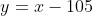
。 （5）例如，一个人身高为 173 厘米，则按此公式，其体重应为 173 - 105 = 68 千克。这当然不是说每个人的身高和体重必然适合这个关系，而是指平均值：身高为 173 厘米的人有许多，其体重有的超过 68 千克，有的不到 68 千克，平均说来是 68 千克。如果某人（身高 173 厘米）体重恰为这个数目，则是最标准的，但在此值上下浮动某个范围内也还可视为正常。比如，有一种说法把在由公式（5）算出的值上下 10% 的范围内算作正常，上下超过 10% 但不超过 20% 算作轻度肥胖或消瘦。例如，某人身高 175 厘米，则 175 - 105 = 70 千克是标准体重，上下 10%，即在 63 千克到 77 千克之间，还算正常，在 77 千克到 84 千克之间算是轻度肥胖，84 千克以上则算是重度肥胖。
像公式（5）这种联系两个变量
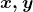
的关系式，称为回归方程式。其意义是： 之间本无严格的关系，这种方程也不是对群体中任一个体都对，而是在上面解释的平均意义上，或者说，它用一个简练的形式总括了 之间的复杂关系的大趋势。如图 5.1，其中每一个点代表了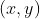
的一对观测值（如一个人的身高和体重），对 做了多次观测，就得到图中的许多点，这在统计学上称为散点图。从散点图看， 和 之间的关系很乱，好比在现实中，人的身高和体重的关系，什么情况都有。但在这种纷乱中，我们看出一个大的趋势，由图中的直线 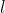
所描述。这条直线 就是根据所有的数据（散点图上的数据）而定出的，称为回归直线，其方程称为回归方程，公式（5）是一个例子。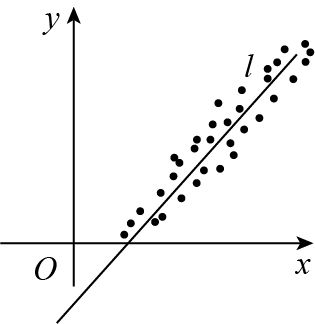
图 5.1 散点图与回归直线
回归方程不是变量之间关系的严格刻画，而只是其一种平均性质的概括。正如有一大批数据，其值各个不同，它们的算术平均可视为这批数据的一个概括，其代表性如何，要看这组数据的散布程度。散布愈小，代表性愈大。拿回归方程去刻画一对变量之间的关系，其代表性如何，取决于我们前面讲到的相关系数
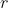
，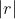
愈接近 1， 和 的关系就愈密切，回归方程的代表性就愈强，图 5.2 中画出了几种有代表性的情况。(a) 是样本点全集中在一直线 上，此直线就是回归线并当然有完全的代表性，这相应于 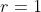
（正相关）的情况。(b) 与 (a) 相似，只是方向相反，相应于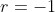
的情况（负相关）。(c) 的情况是 介于 0 与 1 之间，有一定的代表性，但远不如 (a) (b)。(d) 则相应于 接近 0 的情况， 和 的关联很小，回归方程没有多大意义。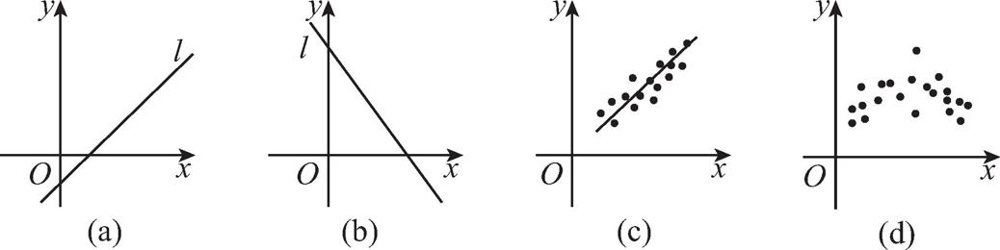
图 5.2 回归线的代表性
依靠数据（散点图）做出的回归方程，称为经验回归方程，因为它并非根据某种理论而得出的。作回归方程的一个简单但不太准确的方法是目测，即把数据标在坐标纸上构成散点图，依其走势画一条直线，看上去最能代表这群点的走势，如图 5.1 中的直线 。更确切一些可用数学计算的方法，方法也不止一种，不同的方法算出的结果略有差别。这些都牵涉到较复杂的数学知识，不能在此细讲了。从统计分析的角度看，作出回归线还只是工作的第一步，更复杂的有一个误差估计问题。我们已经知道，回归方程并不代表 、 之间的确切关系，而是有一定的误差。这误差能大到多少？比如说，用公式（5）通过人的身高估计其体重，有多大的误差？前面我们提到的 10%、20% 的界限，只算是一种简化的做法，更确切的处理在统计学的专门著作中有讨论，比这要复杂得多。
回归在实际问题中应用很广。甚至可以说，它是统计分析中应用最广的一种方法。其应用主要在两个方面。一是预测，例如，利用公式（5），可由人的身高预测其体重。二是控制。在不少问题中，我们希望有目标变量，控制在某个指定的水平上，而 是可调节的。根据类似于公式（5）这种方程，可以通过调节 之值达到控制 值的目的。在实际应用中，情况比我们上面的讨论要复杂：我们只讨论了两个变量的情况，而在应用中往往同时要与许多个变量打交道，多的有几十上百个。另外，方程的形式也限于直线。在实际问题中可能涉及很复杂的情况，其处理比直线情况要麻烦得多。最后，我们来谈谈“回归”这个名称的由来，这个名称是高尔登在研究遗传现象时提出的。他当时思考下面的问题：高个子的人生的子女一般偏高，照这样看，一代一代人在身高的分布上应有两极分化的趋势，即个子很高和很矮的人会愈来愈多，而处在中间状态的会愈来愈少。但现实观察到的情况却不是如此：一代一代人身高的分布基本保持稳定。高尔登思考这个矛盾如何解释。他得出的结论是：下一代的身高有向中心回归的趋势。具体是这样的，他收集了 205 对夫妇的 928 个成年子女的身高资料，分别以 和 记父母二人平均身高与其各子女的平均身高，高尔登建立了这样一个公式：
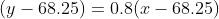
（6）这里是以英寸 3 为单位。68.25 是父代也是子代的平均身高，超过这个数的就是高个子，低于这个数的是矮个子。现考察这个方程（6）。设父母平均身高为 70.25（英寸），这比总平均 68.25 英寸高了 2 英寸，属于高个子之列。按公式（6），其子女的平均身高 为
31 英寸 =2.54 厘米。
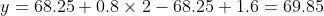
（英寸），子女的身高大于 68.25 英寸，仍属高个子之列，但只高出 1.6 英寸，不如其父代（比平均值高出 2 英寸）那么多。高尔登把这个现象说成是“子代身高向中心（68.25）回归”，这解释了各代人身高分布能保持稳定的原因。
由于这个特例，后人就把反映变量之间的关系的方程称为“回归方程”，而统计学中有关的这一部分内容——通过数据建立方程，对其误差进行估计等，叫作回归分析。当然，在一般情况下，并不存在如高尔登此例中显示的“向中心回归”的现象，因此严格讲，回归这个称呼并不恰当。但这个称呼在统计学中已成了习惯，一直就沿用下来了。